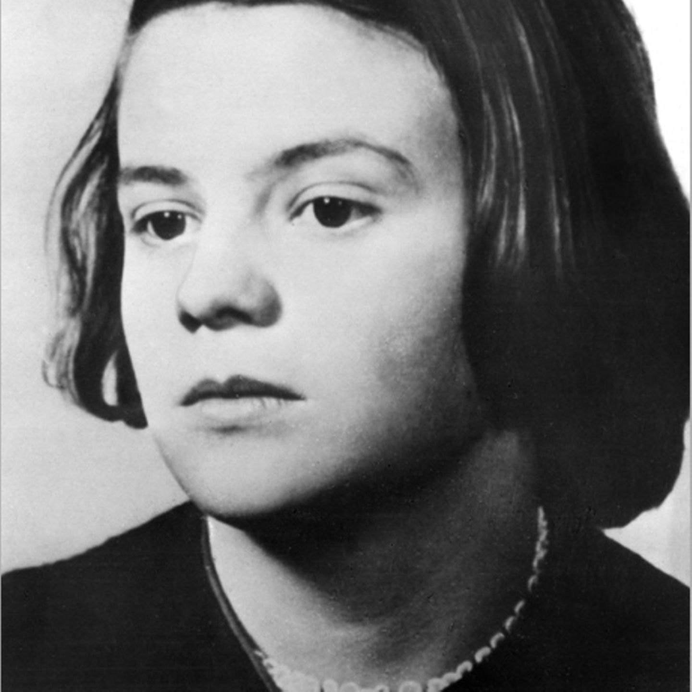

Biografien

Sophie Magdalena Scholl (1921–1943)
Sophie Scholl war Mitglied der Widerstandsgruppe „Weiße Rose“. Ab 1942 verteilte sie gemeinsam mit anderen Studierenden Flugblätter gegen das NS-Regime. Die Gruppe rief zur Beendigung des Krieges und zu mehr Freiheit und Gerechtigkeit auf. 1943 wurde sie verhaftet und hingerichtet.

Cato Bontjes van Beek (1920–1943)
Cato Bontjes van Beek war Teil der Widerstandsgruppe „Rote Kapelle“. Sie unterstützte den Widerstand durch Flugblätter und Hilfe für Verfolgte. 1942 wurde sie verhaftet und 1943 hingerichtet.